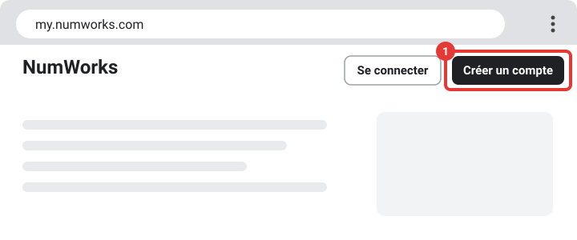
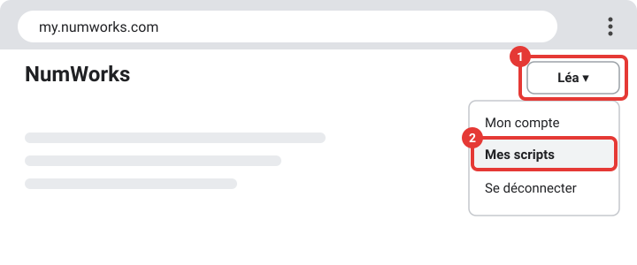
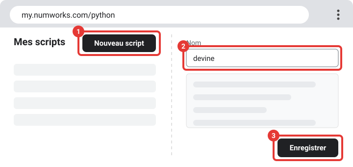
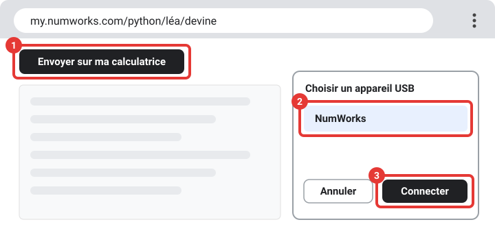
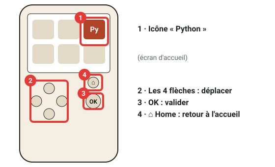

Ajouter des scripts à ta calculatrice
Quel modèle de calculatrice as-tu ? Clique sur le tien pour voir le tuto.
TI-83 Premium CE
Comment la reconnaître : Marque Texas Instruments, écran couleur. « TI-83 Premium CE » est écrit sous l'écran.
Pour la TI-83 Premium CE (écran couleur). Tu vas installer un lanceur de jeux (Cesium), puis ajouter des jeux. Ce tuto ne concerne pas l'ancienne TI-83 Plus en noir et blanc, qui demande une autre méthode.
-
Installe TI Connect CE sur ton ordinateur
C'est le logiciel gratuit de Texas Instruments qui sert à envoyer des fichiers vers la calculatrice. Cherche « TI Connect CE » sur le site education.ti.com et installe-le.
Il existe pour Windows et Mac. Il ne marche pas sur un Chromebook : utilise un PC ou un Mac pour cette étape.
Ouvrir le site de Texas Instruments -
Branche ta calculatrice
Allume la calculatrice, branche-la à l'ordinateur avec le câble USB (le port USB est sur le bord de la calculatrice, en haut sur la plupart des modèles), puis ouvre TI Connect CE. Ta calculatrice doit apparaître dans la fenêtre du logiciel.
-
Regarde la version du système de ta calculatrice
Sur la calculatrice, appuie sur la touche [2nde] (en haut à gauche du clavier), puis sur la touche [+] (en bas à droite, avec « MÉM » écrit au-dessus), puis choisis « 1 : À propos ». Note le numéro de version.
Les jeux écrits en TI-Basic marchent sur toutes les versions. Les jeux « natifs » (plus beaux et plus rapides, lancés avec Cesium) peuvent être bloqués par les versions récentes du système. Si c'est ton cas, la communauté explique comment faire sur ticalc.org, TI-Planet et Cemetech (cherche « arTIfiCE »). C'est à tes risques, et ce n'est pas adapté aux examens.
-
Télécharge le lanceur de jeux (Cesium) et ses bibliothèques
Il te faut deux fichiers gratuits : Cesium (le lanceur, fichier « Cesium.8xp ») et les bibliothèques C (fichier « clibs.8xg »), que beaucoup de jeux utilisent.
Télécharger Cesium Télécharger les bibliothèques -
Envoie-les sur la calculatrice
Dans TI Connect CE, glisse les deux fichiers dans la fenêtre de ta calculatrice (ou utilise le bouton « Envoyer vers la calculatrice »). Attends que le transfert soit fini.
-
Ajoute des jeux
Télécharge des jeux sur TI-Planet ou ticalc.org. Ce sont des fichiers qui finissent par « .8xp » (parfois aussi « .8xv »). Envoie-les sur la calculatrice de la même façon qu'à l'étape précédente.
-
Lance un jeu
Avec Cesium : appuie sur [prgm], choisis CESIUM, puis appuie sur [entrée] (deux fois si besoin). La liste de tes jeux s'affiche : choisis-en un avec les flèches et appuie sur [entrée].
Jeu en TI-Basic : appuie sur [prgm], choisis le nom du jeu, puis appuie deux fois sur [entrée].
Casio Graph 35+E II
Comment la reconnaître : Marque Casio, écran noir et blanc. « Graph 35+E II » est écrit sur la calculatrice.
Pour la Casio Graph 35+E II. Tu vas copier des fichiers sur la calculatrice comme sur une clé USB. Aucun lanceur supplémentaire n'est nécessaire. Les noms des menus peuvent varier un peu selon la version du système.
-
Branche la calculatrice à l'ordinateur
Allume la calculatrice et branche-la avec le câble USB. Ça marche sur Windows, Mac et Chromebook.
-
Choisis le mode « USB Flash »
La calculatrice affiche un écran pour choisir le mode de connexion. Appuie sur la touche [F1] correspondant à « USB Flash » : les touches [F1] à [F6] forment la rangée de 6 touches juste sous l'écran. Si rien ne s'affiche, débranche puis rebranche le câble.
-
Ouvre le disque de la calculatrice
Un nouveau disque apparaît sur l'ordinateur, comme une clé USB. Ouvre-le (sur Chromebook, il apparaît dans l'application « Fichiers » à gauche).
-
Trouve des scripts et des jeux
Télécharge-les sur Planète Casio, le grand site français de la communauté Casio. Choisis des fichiers « .py » (scripts Python) ou « .g1m » (programmes).
-
Copie les fichiers sur la calculatrice
Glisse les fichiers téléchargés dans le disque de la calculatrice, à la racine (pas dans un dossier).
Quand c'est fini, éjecte le disque proprement (clic droit sur le disque puis « Éjecter »), puis débranche le câble.
-
Lance ton script ou ton jeu
Sur la calculatrice, va dans le menu principal. Pour un fichier « .py », ouvre l'application Python, choisis ton fichier, puis lance-le avec la touche indiquée en bas de l'écran (souvent [F1], « Exécuter »).
Pour un fichier « .g1m », ouvre le menu des programmes de la calculatrice, choisis le fichier et lance-le.
NumWorks
Comment la reconnaître : Marque NumWorks, écran couleur. « NumWorks » est écrit sur la face avant.
Pour la NumWorks. Elle fonctionne avec des scripts Python : tu en écris ou tu en trouves, puis tu les envoies sur la calculatrice. Aucun lanceur supplémentaire n'est nécessaire. Les noms des boutons peuvent varier un peu.
-
Prépare ce qu'il te faut
Ta calculatrice NumWorks, son câble USB, et un ordinateur avec Google Chrome ou Microsoft Edge (sur un Chromebook, Chrome est déjà là). Le transfert ne marche ni avec Firefox ni avec Safari.
Les images de ce tuto sont des schémas : l'apparence exacte du site peut un peu changer, mais les boutons gardent leur nom.
-
Ouvre le site NumWorks
Clique sur le bouton : le site s'ouvre dans un nouvel onglet.
Ouvrir my.numworks.com -
Crée ton compte gratuit
En haut à droite de la page, clique sur « Créer un compte » (cadre rouge n°1). Si tu en as déjà un, clique sur « Se connecter » à côté.

Remplis le formulaire (adresse e-mail, mot de passe et les cases demandées), accepte les conditions, puis valide. NumWorks peut t'envoyer un e-mail de confirmation : ouvre-le et clique sur le lien. Note ton mot de passe : il te servira à chaque fois.
-
Ouvre « Mes scripts »
Une fois connecté, ton prénom (ou ton nom d'utilisateur) apparaît en haut à droite. Clique dessus (cadre n°1) : un petit menu s'ouvre. Choisis « Mes scripts » (cadre n°2).

-
Crée un script
Dans « Mes scripts », clique sur « Nouveau script » (cadre n°1). Dans la case « Nom » (cadre n°2), écris un nom en minuscules, sans espace et sans accent ni caractère spécial (par exemple « devine »). Colle ensuite ton programme dans la grande zone, puis clique sur « Enregistrer » (cadre n°3).

Voici un petit jeu pour essayer, « Devine le nombre » :
from random import randint secret = randint(1, 100) essais = 0 trouve = False while not trouve: n = int(input("Ton nombre (1-100) : ")) essais += 1 if n < secret: print("Trop petit") elif n > secret: print("Trop grand") else: print("Bravo en", essais, "essais !") trouve = TrueÀ droite de l'éditeur, un simulateur de calculatrice te permet de tester le script avant de l'envoyer.
-
Branche la calculatrice
Allume ta NumWorks, puis branche-la à l'ordinateur avec le câble USB.
-
Envoie le script sur la calculatrice
Sur la page de ton script, clique sur « Envoyer sur ma calculatrice » (cadre n°1). Le navigateur ouvre une fenêtre « Choisir un appareil USB » : clique sur NumWorks (cadre n°2), puis sur « Connecter » (cadre n°3). Attends le message de confirmation.

Ta calculatrice n'apparaît pas ? Vérifie que tu es bien dans Chrome ou Edge, essaie un autre port USB ou un autre câble, débranche puis rebranche, et recharge la page.
-
Lance le script sur la calculatrice
Sur l'écran d'accueil de la calculatrice (la grille d'icônes), déplace-toi avec les flèches jusqu'à l'icône « Python » (cadre n°1), puis appuie sur OK. La liste de tes scripts s'affiche : choisis le tien avec les flèches, appuie sur OK, puis choisis « Exécuter le script ». La touche Home te ramène à l'écran d'accueil.

-
Trouve d'autres jeux
Sur le site, ouvre la page « Explorer » pour voir des scripts publics faits par la communauté, ou cherche des jeux Python pour NumWorks sur TI-Planet. Copie le code dans un nouveau script, puis envoie-le comme à l'étape 7.
Tu ne sais pas laquelle tu as ? Regarde le nom écrit sur la calculatrice, sous l'écran ou au dos.
Ces programmes sont faits pour t'amuser en dehors des évaluations. Pendant un contrôle ou un examen, suis les consignes de ton professeur et les règles du mode examen de ta calculatrice.